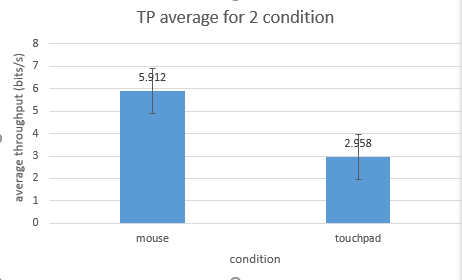

Author: Binpeng Wu
Summary:I test about two conditions, mouse and touchpad using the FittsTouch app in Windows. for each condition i test about 2 people in different Indices of Difficulty per round. i tested person one using mouse first and then do the testing by touchpad in laptop. repeat the step for person 2. The result shows that it is much harder to operate using the touchpad, and the average throughput for using touchpad is much smaller than the condition for mouse as my expectation
chart:
